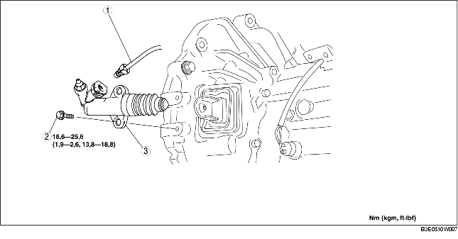

1. Verwijder het onderpaneel.
2. Verwijder de onderdelen in de aangegeven volgorde, zie de tabel.
3. Plaats de onderdelen in omgekeerde volgorde.

.
1. Trek de clip in de aangegeven richting en trek de koppelingsleiding rechtstandig los van de aansluiting.
F35M-R
G35M-R
1. Plaats de clip in de positie zoals in de afbeelding is aangegeven.
F35M-R
G35M-R
2. Plaats de koppelingsleiding recht op de aansluiting.
3. Trek aan de koppelingsleiding om te controleren of hij goed vastzit, plaats de koppelingsleiding indien nodig opnieuw.